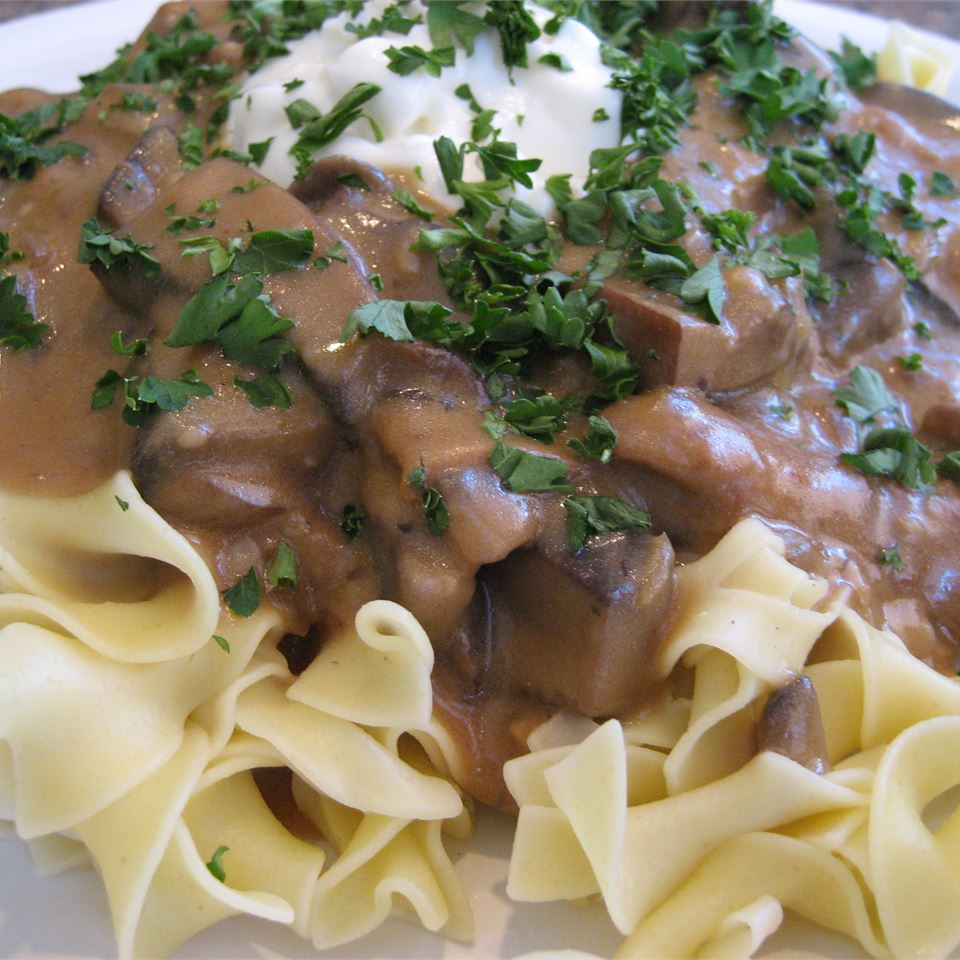

Portobello Mushroom Stroganoff

Delicious Stroganoff
This is a rich and meaty vegetarian stroganoff made with portobello mushrooms, and served over egg noodles.
It is quick to make, and tastes delicious.
- 3 tablespoons butter
- 1 large onion, chopped
- ¾ pound portobello mushrooms, sliced
- 1 ½ cups vegetable broth
- 1 ½ cups sour cream
- 3 tablespoons all-purpose flour
- ¼ cup chopped fresh parsley
- 8 ounces dried egg noodles
- Bring a large pot of lightly salted water to a boil. Add egg noodles, and cook until al dente, about 7 minutes. Remove from heat, drain, and set aside.
- At the same time, melt butter in a large heavy skillet over medium heat. Add onion, and cook, stirring until softened. Turn the heat up to medium-high, and add sliced mushrooms. Cook until the mushrooms are limp and browned. Remove to a bowl, and set aside.
- In the same skillet, stir in vegetable broth, being sure to stir in any browned bits off the bottom of the pan. Bring to a boil, and cook until the mixture has reduced by 1/3. Reduce heat to low, and return the mushrooms and onion to the skillet.
- Remove the pan from the heat, stir together the sour cream and flour; then blend into the mushrooms. Return the skillet to the burner, and continue cooking over low heat, just until the sauce thickens. Stir in the parsley, and season to taste with salt and pepper. Serve over cooked egg noodles.